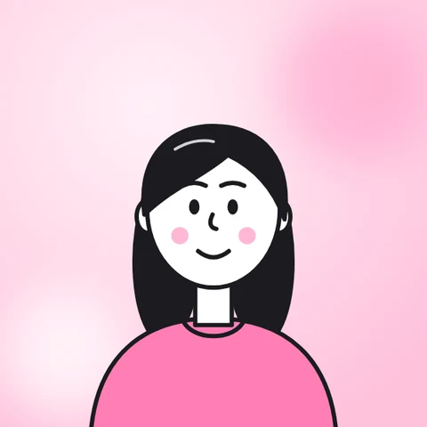
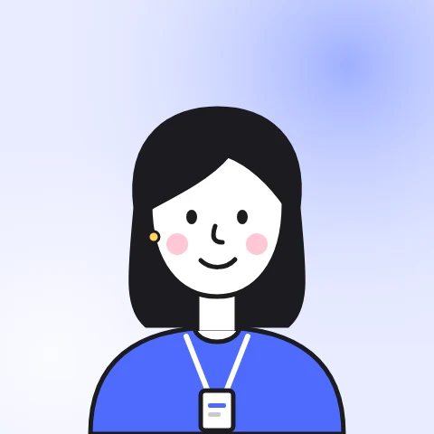
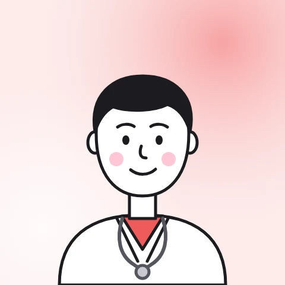
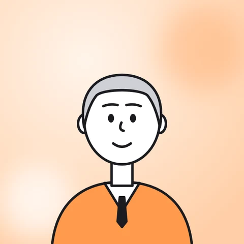
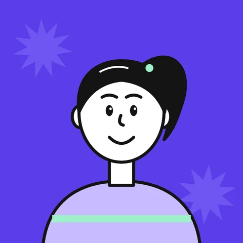
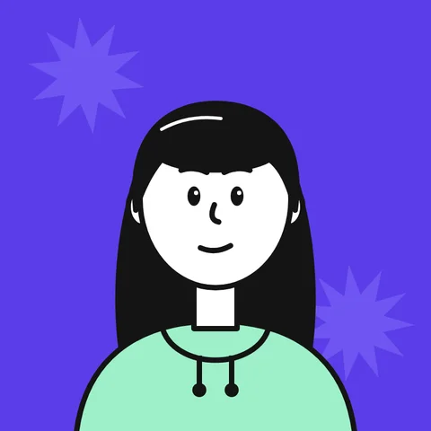
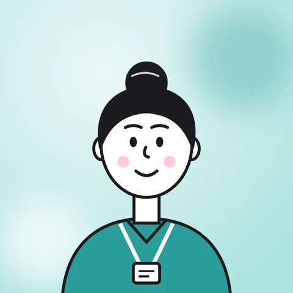
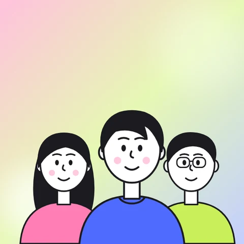

La fundación deriva, no asiste
No tiene equipo ni infraestructura para asistir casos. El aviso se queda, y Pedir ayuda tiene que derivar a las líneas oficiales y a Bajalo Ya!.

LauraUn sitio más claro, accesible y pensado para el celular, para que las familias, adolescentes y docentes encuentren ayuda y recursos cuando más los necesitan.
Ver el resumen ↓Resumen ejecutivo
Todo el proyecto en dos minutos. Si algo te interesa, podés entrar al detalle de cada etapa.
El proyecto
Red por la Infancia es una fundación argentina que desde 2010 trabaja para prevenir las violencias contra niñas, niños y adolescentes. Su sitio es la puerta de entrada para quien busca ayuda, familias, docentes y equipos de salud, donantes, prensa e instituciones.
Hoy el sitio está hecho con un page builder (Divi), creció sin un sistema de diseño y no acompaña a quienes llegan desde el celular ni a quienes no hablan español. Estoy rediseñándolo con el proceso de design thinking.
El proyecto tiene un plazo concreto: la Conferencia Mundial de Manila, en noviembre de 2026. Para esa fecha, la fundación necesita al menos presentar su trabajo en inglés ante aliados internacionales, así que el rediseño se prioriza por etapas.
El desafío
¿Cómo podríamos lograr que cualquier persona, desde su celular y en un momento difícil, encuentre ayuda o recursos en pocos toques, y que el equipo pueda mantener el sitio sin depender de IT?
Hallazgos clave
Las cinco etapas
En una frase
Etapa 1
Antes de diseñar, entender: auditoría del sitio actual, datos reales de uso, a quién le habla el sitio y qué les pasa cuando lo usan.
Auditoría del sitio actual
Recorrí redporlainfancia.org en computadora, tablet y celular y documenté cada problema con capturas. Abrí una carpeta para ver las capturas.
Puntos de dolor
Seis problemas que surgieron de la auditoría y de los datos de uso, clasificados según el tipo de punto de dolor. Elegí una categoría para filtrarlos.
Financiero: dinero · Producto: calidad · Proceso: recorrido del usuario · Soporte: conseguir ayuda.
La mitad de las visitas llegan desde el celular, pero el texto se superpone, los títulos se cortan y hay que hacer zoom para leer.
"Necesito Ayuda" y "Quiero Colaborar" se cortan o no aparecen en el celular ni en el menú, y los teléfonos de ayuda no se pueden tocar para llamar: se pierden pedidos de ayuda y donaciones.
Elementos cortados o superpuestos, tarjetas desparejas, columnas vacías, colores que cambian entre páginas y un copyright desactualizado le restan confianza a la organización.
El equipo no puede publicar contenido nuevo sin pedirle a IT que arme cada página desde cero: no hay plantillas.
"Nuestro Trabajo" no lleva a ninguna página, no hay buscador y la búsqueda y el error 404 aparecen en blanco.
Banners con el texto incrustado: cargan lento, se pixelan y no se pueden leer en pantallas chicas ni con lector de pantalla.
La fundación participa en conferencias internacionales, pero el sitio no tiene una versión en inglés: quienes llegan desde otros países no entienden qué hace y se pierden alianzas y financiamiento.
Datos de uso · Google Analytics
Últimos 12 meses (oct 2025 – oct 2026). Los datos validaron algunas hipótesis y desarmaron otras.
En celulares, Android (~2.000 usuarios) supera ampliamente a iOS (730). Las pantallas más comunes miden entre 384 y 412 px de ancho: justo donde el sitio se rompe.
31% de los usuarios está fuera de Argentina e inglés es el 2º idioma de los navegadores, seguido por chino y portugués.
La página de la Conferencia Mundial de Manila tiene la mayor interacción del sitio (2,18 vistas por usuario y 58 s) e INSPIRE · Manila 2026 creció 54% en una semana.
Parte del tráfico de EE.UU. viene de centros de datos (Ashburn, Council Bluffs) y probablemente incluye bots.
Entrevista con la fundación
Validé las proto-personas con la directora ejecutiva de Red por la Infancia. Confirmó buena parte de la investigación, sumó dos públicos nuevos y cambió cómo pensamos la ayuda.
No tiene equipo ni infraestructura para asistir casos. El aviso se queda, y Pedir ayuda tiene que derivar a las líneas oficiales y a Bajalo Ya!.

LauraA ella misma le cuesta encontrar información en el sitio. Propone replicar la navegación de ReConectate, organizada por tipo de audiencia.
Todas las personasSe separa de academia y del ámbito judicial/legislativo porque cada uno va a recibir recursos distintos.

Nueva: ValeriaSe suman al grupo de docentes y profesionales, con guías y protocolos propios.

Nuevo: Dr. JavierUna sección pensada para ellos, con las notas en medios y el impacto en números.

DiegoFamilias: Campus (en desarrollo), ReConectate y Pantasaurus. Adolescentes: ReConectate y Bajalo Ya!.


Silvia y CamilaEstá de acuerdo con lo desarrollado y evalúa un nombre en inglés más fácil de pronunciar para angloparlantes.

MayaNo sabe de dónde sacar los números. Necesita un sistema simple para registrar capacitaciones, talleres, seminarios y reconocimientos a medida que suceden.

Equipo RxI¿Para quién es el sitio?
A partir de los contenidos del sitio, sus llamados a la acción, los datos de uso y la entrevista con la directora ejecutiva, identifiqué ocho grupos de usuarios.
Familiares, vecinos o adolescentes ante una situación de violencia. Llegan angustiados y desde el celular. La fundación no asiste: los deriva a las líneas oficiales y a Bajalo Ya!.
Quieren aprender a detectar, prevenir y actuar. Buscan el Campus, ReConectate y Pantasaurus.
Docentes, equipos de salud, trabajadores sociales, psicólogos y abogados que buscan guías, protocolos y capacitaciones.
Llegan desde redes, casi siempre por celular. Necesitan llegar rápido a Bajalo Ya!, la 3ª página más vista, y a ReConectate.
Personas, empresas y fundaciones que necesitan confiar: buscan impacto en números, notas en medios y una forma simple de colaborar.
Investigadores, legisladores y operadores judiciales que buscan evidencia para políticas públicas.
Delegaciones, redes y organismos que conocen a la fundación en conferencias como INSPIRE o Manila 2026. No hablan español y necesitan entender rápido qué hace.
Periodistas que trabajan contra reloj y necesitan datos citables, voceros y un contacto que responda rápido.
Proto-personas
Nueve personas para ocho grupos, validadas con Google Analytics y con la directora ejecutiva. Tocá una tarjeta para ver su historia completa.
Mapas de empatía
Un mapa por persona para ponerse en su lugar en el momento en que llega al sitio, con los dolores que hoy la frenan y lo que espera ganar.
Historias de usuario
33 historias priorizadas con MoSCoW, cada una con criterios de aceptación y el dato que la respalda.
Mapas de recorrido
Acciones, tareas, sentimientos y oportunidades de mejora en cada momento. La curva muestra cómo cambia el ánimo a lo largo del recorrido.
Aprendizajes
La fundación no asiste casos: deriva. Pero solo el 4% llega a "Necesito Ayuda" y los números no se pueden tocar. Es el problema más urgente del sitio.
La mitad entra desde el celular, sobre todo Android, en pantallas de 384–412 px. El rediseño empieza por ahí.
Es la 3ª página más vista y su público es adolescente: Camila pasó a ser persona primaria.
No hay eventos clave en Analytics: no se sabe cuántas personas piden ayuda, donan o descargan una guía.
Casi un tercio de las visitas llega desde fuera de Argentina, sobre todo después de las conferencias. Sin inglés, esas alianzas se pierden.
Hasta al equipo le cuesta encontrar información. Una navegación por audiencia, como la de ReConectate, ordena el sitio para ocho públicos distintos.
Etapa 2
De la investigación a decisiones: qué problema resolver para cada persona, qué esperamos lograr y qué valor le va a dar el nuevo sitio.
Problem statements
Formato: [persona] es [características] que necesita [necesidad] porque [insight]. El insight explica por qué eso es un problema para esa persona, según su personalidad y su contexto.
Hipótesis If / Then
Cada hipótesis responde a un problem statement e incluye cómo vamos a medirla en la etapa Test.
Propuestas de valor
Listamos todas las funcionalidades y beneficios posibles, grandes y chicos, sin filtrar.
Propuesta de valor general
Propuesta de valor única · a validar
Se contrastó en el competitive audit de la etapa Ideate: ninguna de las organizaciones argentinas auditadas deriva a líneas oficiales ni tiene una herramienta como Bajalo Ya!.
Etapa 3
Antes de bocetar, definir qué queremos lograr y mirar cómo resuelven lo mismo otras organizaciones: qué copiar, qué evitar y qué espacio nadie está ocupando.
Goal statement
Del problema al objetivo, con la plantilla del certificado de Google UX: producto, acción, audiencia, impacto y cómo lo vamos a medir. Tocá cada parte para ver por qué está ahí.
Competitive audit
Comparación
Cinco lentes, una por cada pregunta del audit, con Red por la Infancia como punto de partida. Elegí una fila para ver la evidencia.
El gap
Cuántos de los cinco competidores resuelve cada cosa. Lo que el sector hace bien está arriba; lo que queda vacío, abajo. Ese vacío es la posición que puede ocupar Red por la Infancia.
Design implications
Cada hallazgo se convierte en una decisión o una pregunta para la próxima etapa: bocetos, arquitectura de información y prototipo.
Lo que viene
Wireframes, sistema de diseño y prototipo mobile-first en Figma.
PróximamenteTests de usabilidad con personas reales e iteración.
Próximamente